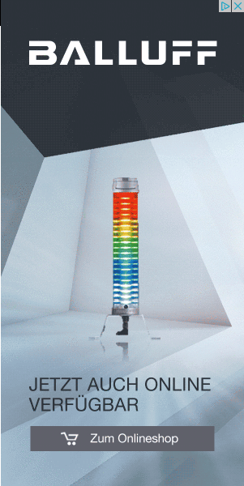
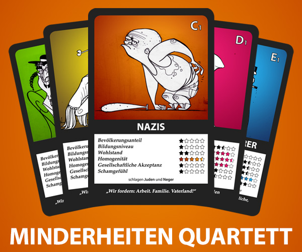

13 °C

+++ Ei fällt dumm: Von Pariser Wahrzeichen geworfenes Hühnerprodukt
erschlägt Passanten +++ +++ Bärchen gefunden: Franke überzeugt beim
Tiermemory +++ +++ Bergen: Norwegischer Feuerwehrmann erzählt, was
er so macht +++

